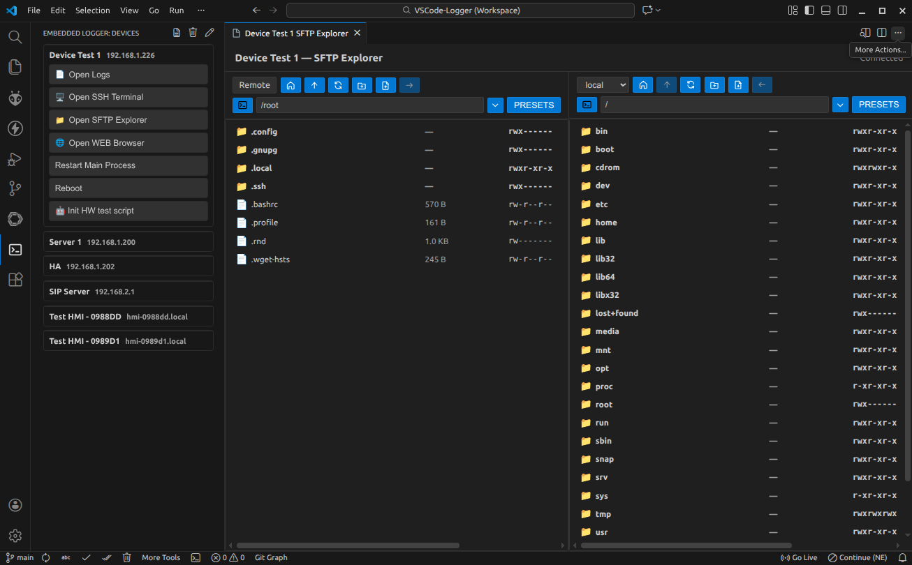

Embedded Device Logger
The Embedded Device Logger is a Visual Studio Code extension that can connect to your devices over SSH, tail their logs, and help you analyze the data with loglevel colorization, quick filters, custom keywords highlights and filtered export. It provides also an SFTP client, SSH terminals and one-off SSH commands to help you develop, debug and maintain your Linux-based devices.
Offline logs view:

SFTP Panel view:

If you like the extension, please rate it. We welcome issue reports and feature requests.
Key Features
Stream device logs over SSH with real-time level parsing and colorization.
Search, filter, bookmark, and export the exact lines you need.
Highlight up to 10 keywords per panel to spot critical events fast.
Run one-off SSH commands.
Open SSH terminals.
Browse files with the built-in SFTP explorer.
Secure by default: passwords and key passphrases live in VS Code Secret Storage.
Getting started
Install the extension (see below).
Open the Embedded Logger view from the Activity Bar (terminal icon).
Open the configuration with the “pencil” icon and add your devices under
embeddedLogger.devicesand start streaming logs.
For the full setup and configuration reference, see the Detailed Usage and Configuration guide.
Installation
From the VS Code Extensions view, search for Embedded Device Logger (Publisher: Scallant).
From Quick Open (Ctrl/Cmd+P):
ext install Scallant.embedded-device-logger.From a terminal:
code --install-extension Scallant.embedded-device-logger.
Visit the Marketplace page for more details.
For developers
Want to build from source or contribute? See the Developer Setup and Workflow for packaging, local installs, and contribution guidelines. The project is open to pull requests. Please, check the CONTRIBUTING guide before submitting.